Timing Parata alta
Aggiornamento: 2026-11-05. Controllati visivamente 42 personaggi su 42. La posa selezionata di parata alta inizia a 100 ms (0,1 s) dalla partenza, a velocità 1x.
Ogni personaggio usa un framerate costante scelto in base al proprio spritesheet: FPS = indice del frame di parata (da 0) × 1000 / 100 ms. I numeri dei frame in tabella partono da 1. Tutti i frame esportati restano nel loro ordine, senza modificare scala o margini. La durata del ciclo varia con il numero di frame e il framerate; i moltiplicatori di velocità modificano anche il tempo di ingresso in parata. Le altre mosse conservano il loro timing.
“Riproduci tutte” riparte dal primo frame. Le pose scelte e i relativi ID sorgente sono registrati in animation/block-timing.json; dopo una sostituzione degli asset occorre rivedere la selezione.
Personaggi senza Block disponibile (0): nessuno.
| Personaggio | Posa scelta | Frame parata | Parata pronta | FPS a 1x | Ciclo | Note |
|---|---|---|---|---|---|---|
| ALBERTO | 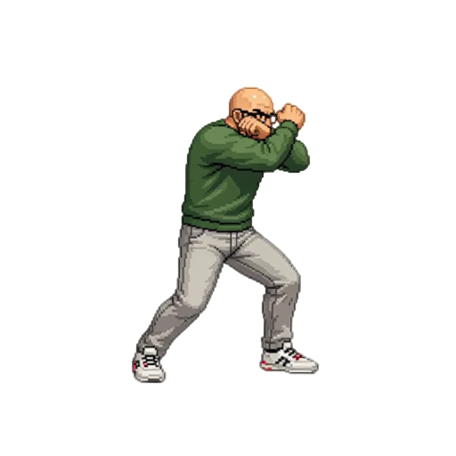 | 5 / 14 | 100 ms | 40 | 350.0 ms | Prima posa di parata alta stabilita, scelta visivamente. |
| ALEX | 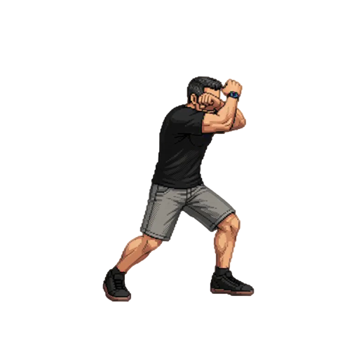 | 5 / 15 | 100 ms | 40 | 375.0 ms | Prima posa di parata alta stabilita, scelta visivamente. |
| ANGELA | 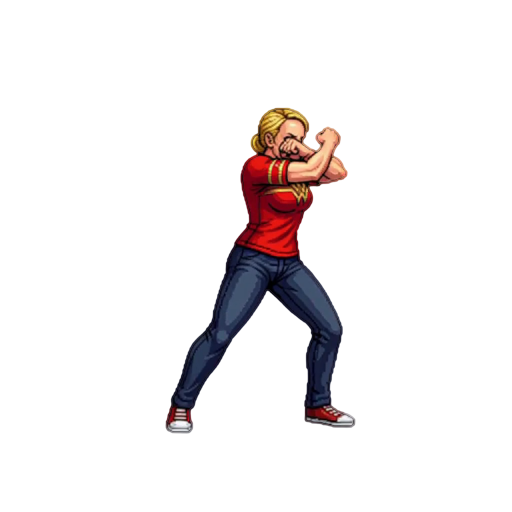 | 5 / 14 | 100 ms | 40 | 350.0 ms | Prima posa di parata alta stabilita, scelta visivamente. |
| ANTONINO | 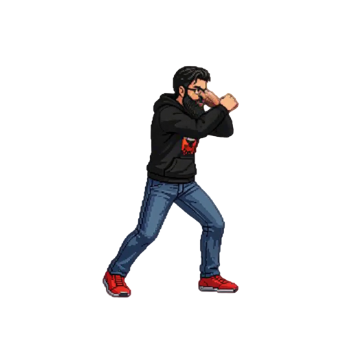 | 4 / 14 | 100 ms | 30 | 466.7 ms | Prima posa di parata alta stabilita, scelta visivamente. |
| BARBARA-FIOCCA | 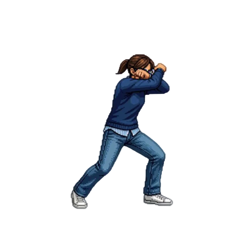 | 4 / 12 | 100 ms | 30 | 400.0 ms | Prima posa di parata alta stabilita, scelta visivamente. |
| Bonazzi | 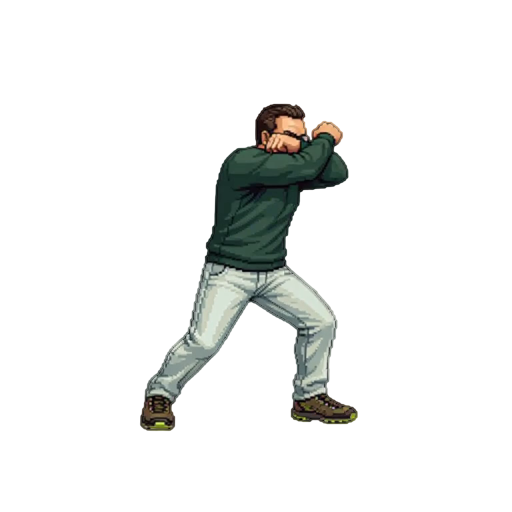 | 4 / 14 | 100 ms | 30 | 466.7 ms | Prima posa di parata alta stabilita, scelta visivamente. |
| Chiara-Molina | 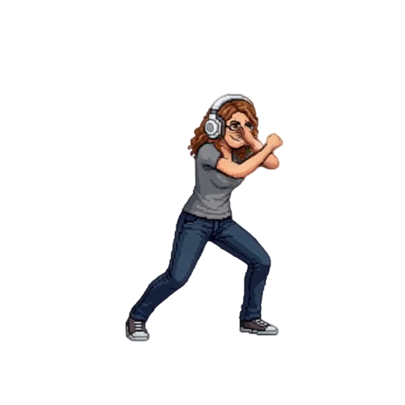 | 5 / 15 | 100 ms | 40 | 375.0 ms | Prima posa di parata alta stabilita, scelta visivamente. |
| CHIARA-TONIOL | 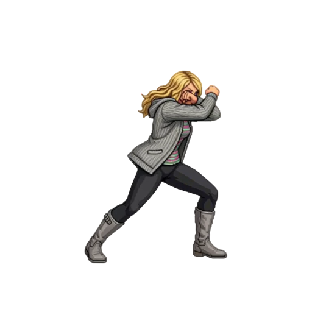 | 4 / 15 | 100 ms | 30 | 500.0 ms | Prima posa di parata alta stabilita, scelta visivamente. |
| CONDELLO | 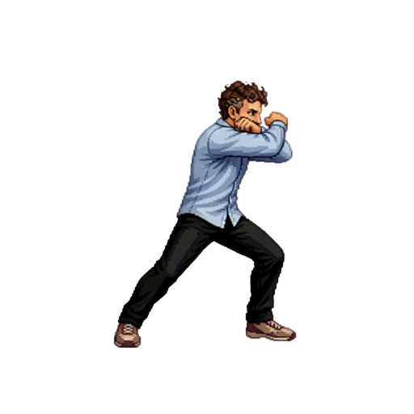 | 6 / 14 | 100 ms | 50 | 280.0 ms | Prima posa di parata alta stabilita, scelta visivamente. |
| DINO | 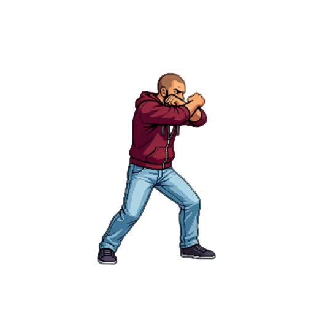 | 4 / 14 | 100 ms | 30 | 466.7 ms | Prima posa di parata alta stabilita, scelta visivamente. |
| Elisa | 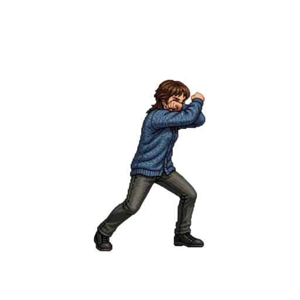 | 4 / 14 | 100 ms | 30 | 466.7 ms | Prima posa di parata alta stabilita, scelta visivamente. |
| EMMA | 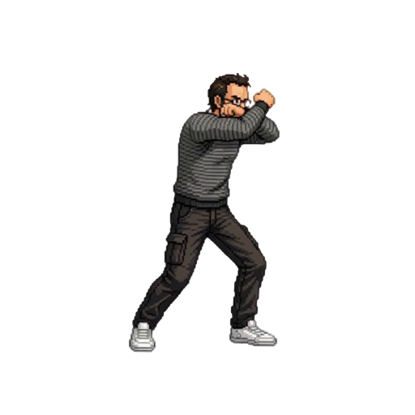 | 5 / 13 | 100 ms | 40 | 325.0 ms | Prima posa di parata alta stabilita, scelta visivamente. |
| EROS | 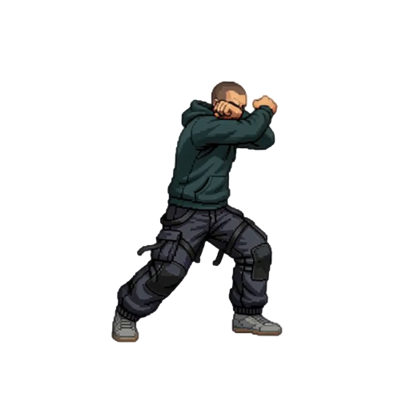 | 4 / 14 | 100 ms | 30 | 466.7 ms | Prima posa di parata alta stabilita, scelta visivamente. |
| FABIO-CLARA | 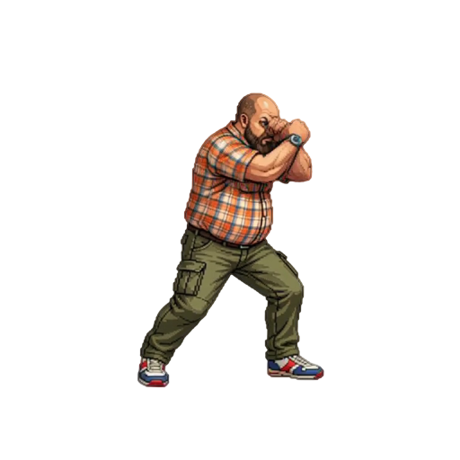 | 4 / 13 | 100 ms | 30 | 433.3 ms | Prima posa di parata alta stabilita, scelta visivamente. |
| FARA | 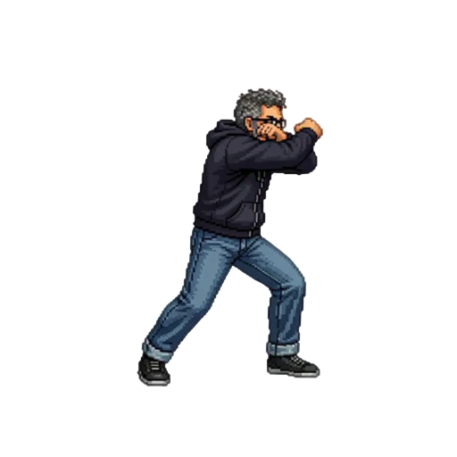 | 4 / 14 | 100 ms | 30 | 466.7 ms | Prima posa di parata alta stabilita, scelta visivamente. |
| FRA-AMATO | 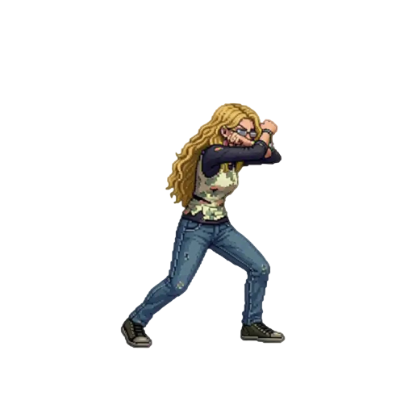 | 4 / 15 | 100 ms | 30 | 500.0 ms | Prima posa di parata alta stabilita, scelta visivamente. |
| FRA-TAVARONE | 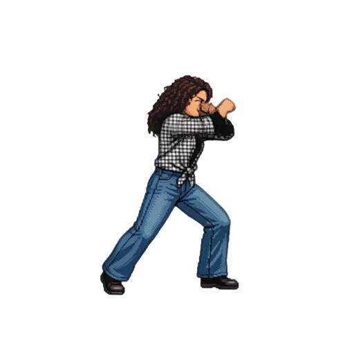 | 4 / 14 | 100 ms | 30 | 466.7 ms | Prima posa di parata alta stabilita, scelta visivamente. |
| FRANCESCA-RIVELLA | 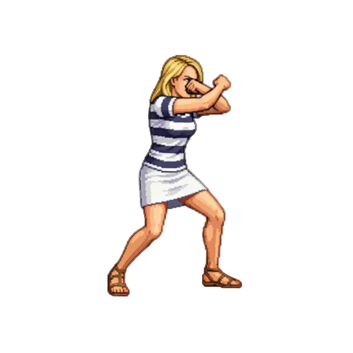 | 3 / 14 | 100 ms | 20 | 700.0 ms | Prima posa di parata alta stabilita, scelta visivamente. |
| FRANCESCO-LEONI | 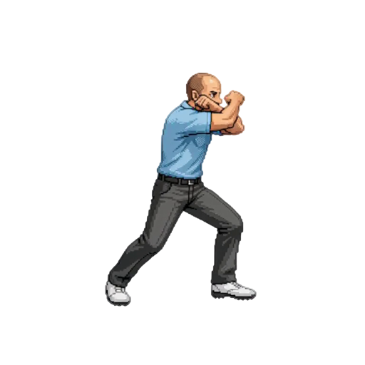 | 5 / 14 | 100 ms | 40 | 350.0 ms | Prima posa di parata alta stabilita, scelta visivamente. |
| GENNARO | 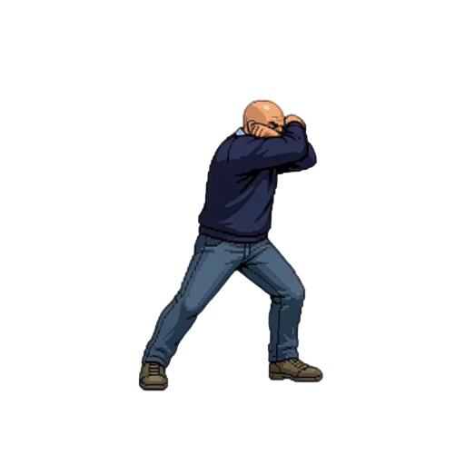 | 4 / 14 | 100 ms | 30 | 466.7 ms | Prima posa di parata alta stabilita, scelta visivamente. |
| Giordano | 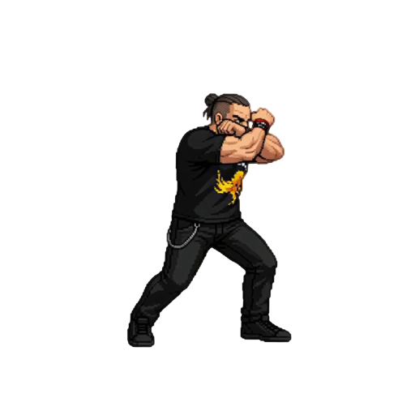 | 5 / 11 | 100 ms | 40 | 275.0 ms | Prima posa di parata alta stabilita, scelta visivamente. |
| GIORGIO | 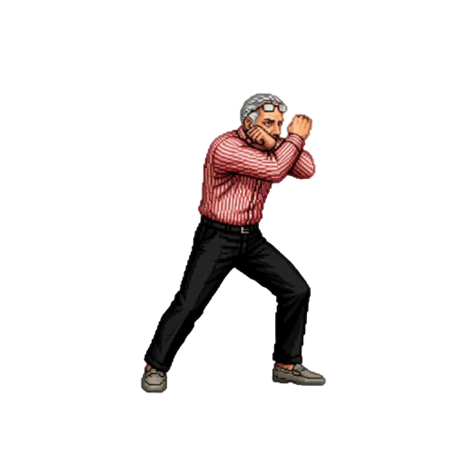 | 4 / 14 | 100 ms | 30 | 466.7 ms | Prima posa di parata alta stabilita, scelta visivamente. |
| JERRY | 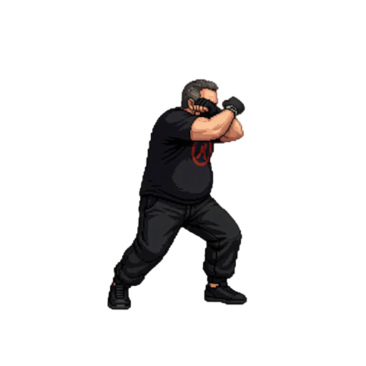 | 4 / 15 | 100 ms | 30 | 500.0 ms | Prima posa di parata alta stabilita, scelta visivamente. |
| LIVIO | 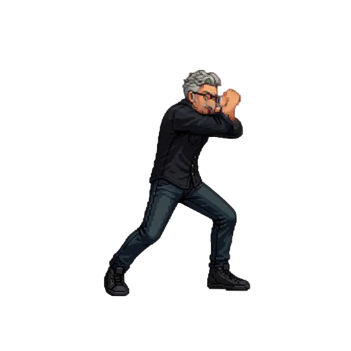 | 3 / 10 | 100 ms | 20 | 500.0 ms | Prima posa di parata alta stabilita, scelta visivamente. |
| LUANA | 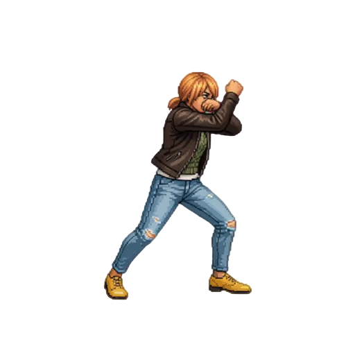 | 4 / 14 | 100 ms | 30 | 466.7 ms | Prima posa di parata alta stabilita, scelta visivamente. |
| MANU | 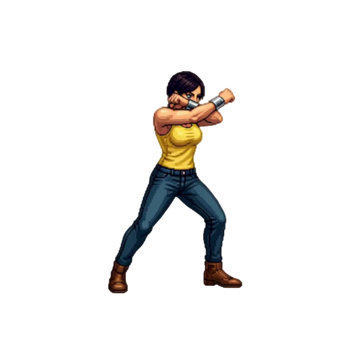 | 4 / 14 | 100 ms | 30 | 466.7 ms | Prima posa di parata alta stabilita, scelta visivamente. |
| MARCO-BALPO | 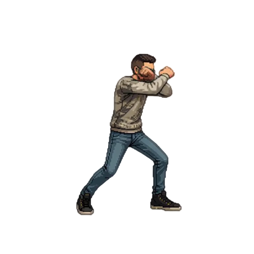 | 4 / 14 | 100 ms | 30 | 466.7 ms | Prima posa di parata alta stabilita, scelta visivamente. |
| Marco-Rossetti | 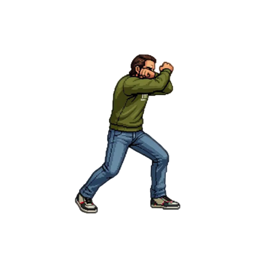 | 5 / 14 | 100 ms | 40 | 350.0 ms | Prima posa di parata alta stabilita, scelta visivamente. |
| MARIO | 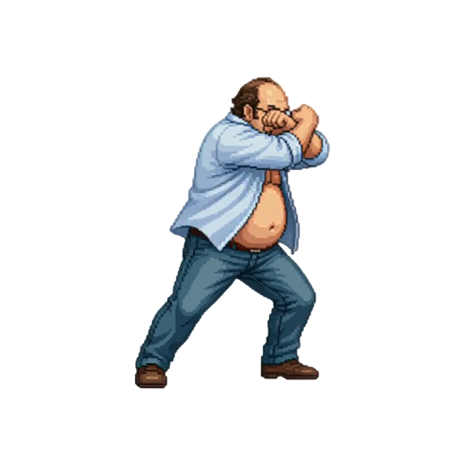 | 4 / 14 | 100 ms | 30 | 466.7 ms | Prima posa di parata alta stabilita, scelta visivamente. |
| MARSAN | 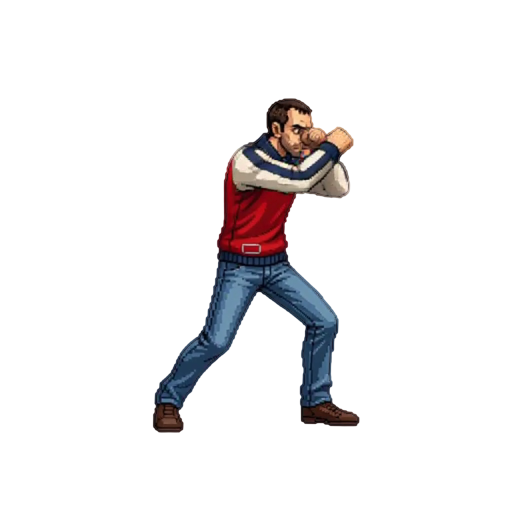 | 4 / 14 | 100 ms | 30 | 466.7 ms | Prima posa di parata alta stabilita, scelta visivamente. |
| MARTINI | 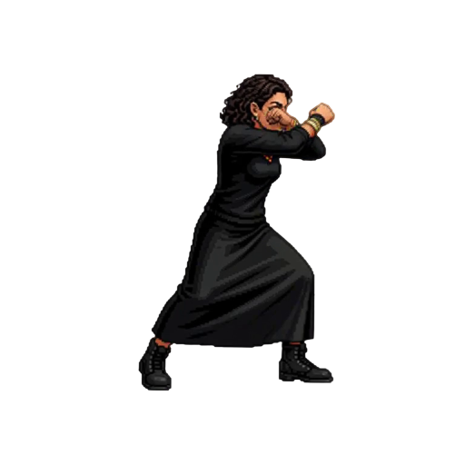 | 4 / 15 | 100 ms | 30 | 500.0 ms | Prima posa di parata alta stabilita, scelta visivamente. |
| MATTEO | 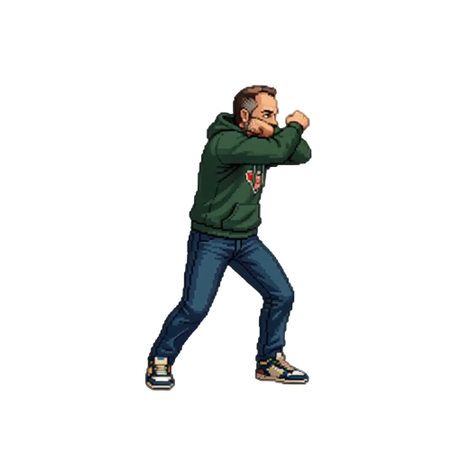 | 5 / 12 | 100 ms | 40 | 300.0 ms | Prima posa di parata alta stabilita, scelta visivamente. |
| MIKE | 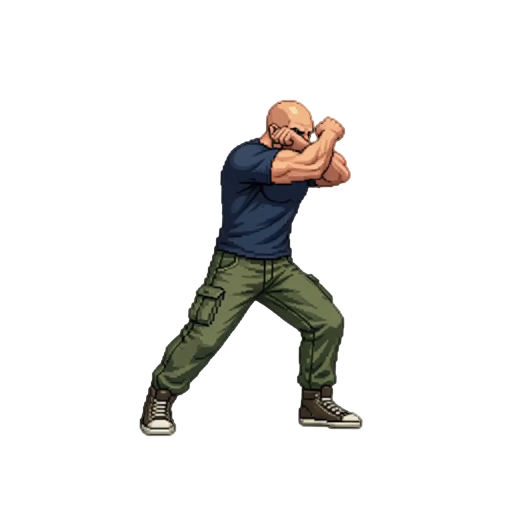 | 6 / 14 | 100 ms | 50 | 280.0 ms | Prima posa di parata alta stabilita, scelta visivamente. |
| MORI | 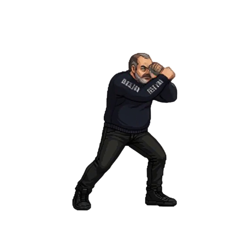 | 4 / 15 | 100 ms | 30 | 500.0 ms | Prima posa di parata alta stabilita, scelta visivamente. |
| Oscar | 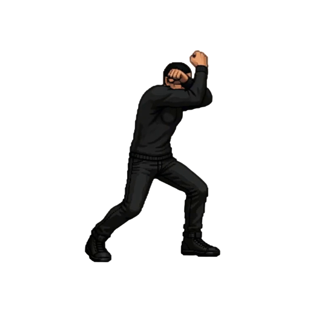 | 6 / 16 | 100 ms | 50 | 320.0 ms | Prima posa di parata alta stabilita, scelta visivamente. |
| PEIROLO | 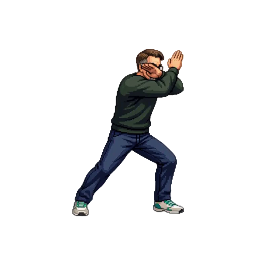 | 5 / 14 | 100 ms | 40 | 350.0 ms | Prima posa di parata alta stabilita, scelta visivamente. |
| PEPPO | 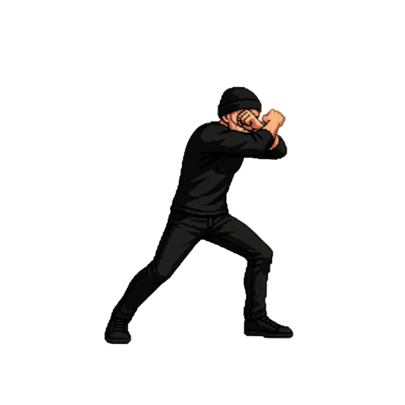 | 4 / 14 | 100 ms | 30 | 466.7 ms | Prima posa di parata alta stabilita, scelta visivamente. |
| PIPPO | 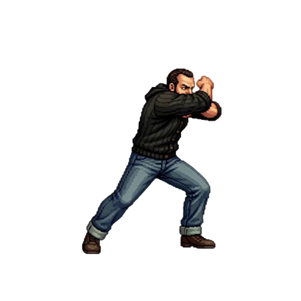 | 4 / 14 | 100 ms | 30 | 466.7 ms | Prima posa di parata alta stabilita, scelta visivamente. |
| SBOZ | 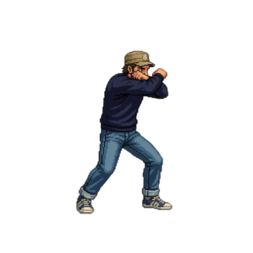 | 5 / 14 | 100 ms | 40 | 350.0 ms | Prima posa di parata alta stabilita, scelta visivamente. |
| Simona | 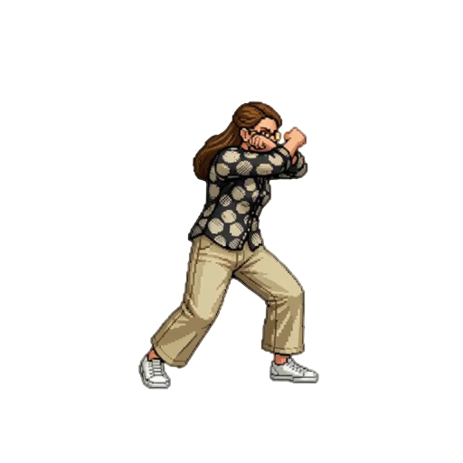 | 5 / 14 | 100 ms | 40 | 350.0 ms | Prima posa di parata alta stabilita, scelta visivamente. |
| TOMMASO | 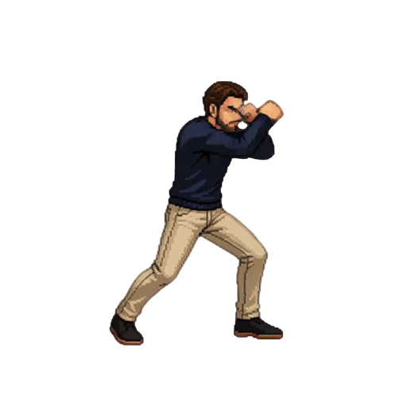 | 4 / 14 | 100 ms | 30 | 466.7 ms | Prima posa di parata alta stabilita, scelta visivamente. |
| ZICHELLA | 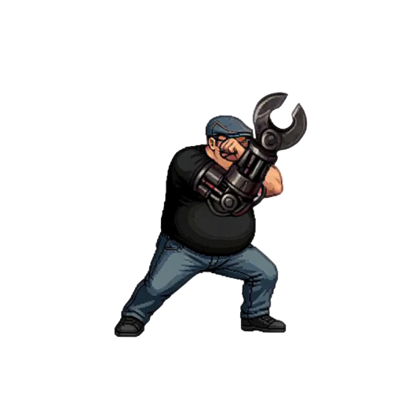 | 2 / 10 | 100 ms | 10 | 1000.0 ms | Parata con padella sollevata; posa difensiva diversa dalla guardia con avambracci degli altri personaggi. |